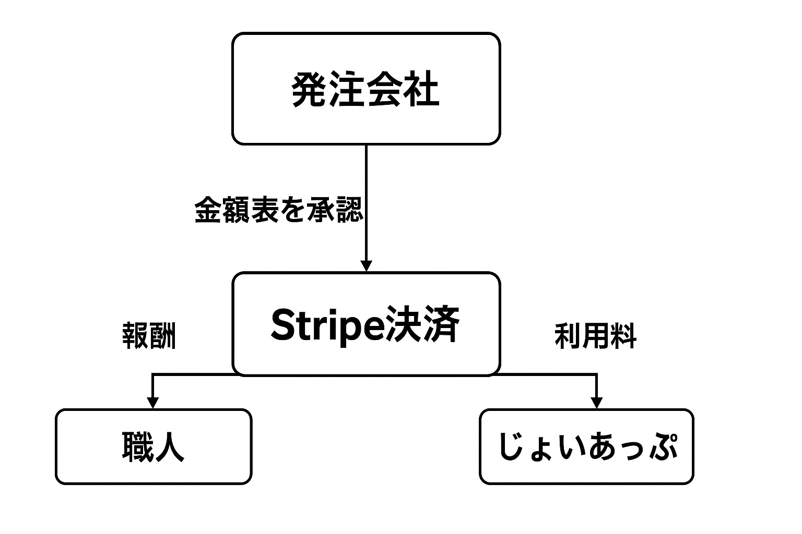

建設現場で働く職人と発注企業を日程ベースでつなぐマッチングプラットフォームです。 職人は空き日を登録することで、条件に合う仕事を提案されたり、掲載された現場から自分に合う仕事を探すことができます。 発注企業は必要なときに最適な職人を直接探すことができ、現場を掲載して職人からのオファーを受けることも可能です。
当サービスでは、Stripe Connectを通じて、発注企業から職人への報酬と運営側への利用料を分配します。 支払いの流れは以下の通りです：

株式会社サンサンは、お客様の個人情報を適切に管理し、第三者への提供・開示は行いません。
個人情報は、サービス提供およびお問い合わせ対応の目的に限って利用いたします。
詳細は今後プライバシーポリシーページを整備予定です。